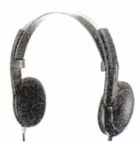
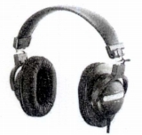
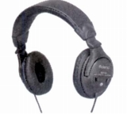

ROLAND（ローランド）
1972年設立の日本を代表する電子楽器メーカー。初期にはエフェクターや演奏用スピーカーアンプ、音響ミキサー等の製造を行っていたが、やがて電子楽器に進出、現在では総合的な音響システムやUVプリンター等コンピュータ周辺機器まで手がけるメーカーとなっている。
ヘッドフォンに関しては楽器等のモニター用途の製品を手がけていたが、現在ではバランスド・アーマチュア型インナー・イヤー・ヘッドフォンまで製品の幅を広げ、一般用途でも使われるようになっているが、当サイトの対象である1990年代の製品は他社製品を思わせるデザインのものが多い。当時の型番は「RH」、現在でもモニター系では使われているようだ。
�T.1993年頃の製品
1993年の時点でオープンエア型2機種、密閉型1機種の合計３機種が確認できる。テクニカのOEMらしくRH-20はPointシリーズの後期機種、RH-80はATH-B（デジタルベーシック）シリーズ、最上位機種RH-120はATH-M7系のデザイン。


（左 RH-80 右 RH-120)
�U.2000年頃の製品
2000年の時点でオープンエア型1機種、密閉型1機種の合計2機種が確認できる。上位機種RH-50はパイオニアのSE-550D系のデザイン。

(RH-50)